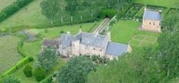
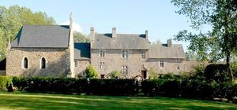
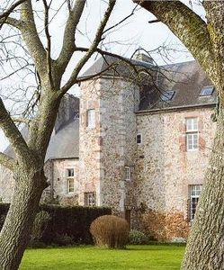

Recensement Jean-Claude Truffet
| Département | 50 — Manche |
| Canton | Pont-Hébert |
| Commune | Le Dézert |
| Type d'édifice | Manoir |
| Période d'origine | XV-XVI-XVII |



St-ORTAIRE, Guillaume de La Mare (1451-1525), à qui on attribue la reconstruction du manoir « sa formation humaniste, avec Geoffroy Herbert expliqueraient alors la qualité architecturale de lédifice et spécialement celle des cheminées », Charles Fierville précise que Guillaume de la Mare faisait partie de la chancellerie du Roi Charles VIII, « qui l'aimait beaucoup à cause de son talent poétique et de l'habileté avec laquelle il écrivait » attestent de ses liens avec la cour de France. La propriété est vendue en 1614 à Michel Martin, riche drapier de Saint-Lô, dont les héritiers vendront le bien en 1654 pour le racheter 3 ans plus tard); on peut lire sur lacte de vente une description de la propriété : le manoir, consistant en maison manable, pressoir, grange et étables. Suit une longue liste de pièces de terre. Le manoir deviendra propriété, entre autres, de Armand-Jérôme Bignon, bibliothécaire du roi Louis XV et Jérome-Joseph-Marie Grimaldi de Monaco. La mise à disposition récente du plan Napoléonien de 1823, permet de confirmer la présence dune double enceinte protégeant lensemble. À savoir : un premier mur de protection encerclant la face Nord du manoir et la chapelle, appuyée par une tour à son Nord-Ouest (aujourdhui disparue). Cette cour était accessible par un double portail dentrée à lEst de la chapelle. Une deuxième enceinte était formée au Nord par des hauts talus et au Sud par un fossé toujours existant, « la Lime de St Ortaire ». Il est à noter la disparition dune autre tour (de plan carré) accolée sur la face Nord du manoir.
St-ORTAIRE, remontent au début du XVIe siècle. La chapelle, qui fut remaniée au XVIIe siècle, était le lieu d'une dévotion populaire consacrée à Saint-Ortaire. Le manoir Saint-Ortaire, avec sa salle basse double en élévation et la salle haute, permet de comprendre l'organisation d'un logis seigneurial de la fin du Moyen-Age et du début de la Renaissance dans la Manche. Il est restauré par la dynamique déléguée des V.M.F. pour la Manche, Madame Sinikka Gallois et son époux. « Le corps de logis principal est constitué dune vaste salle centrale, lun des rares exemples dédifice à salle basse double en élévation (4,95 m) conservé pratiquement intact . ».On y accède directement de lextérieur par une grande porte surmontée dun linteau en double accolade. Une superbe cheminée monumentale en pierre rouge locale se situe sur le mur pignon Est, flanquée à droite par un escalier tournant menant à la chambre dentresol, muni dun judas, qui surmonte un cellier demi enterré. Dans langle sud-ouest de la grande salle centrale, une belle porte à linteau en accolade conduit à l'ancienne cuisine. Une porte située en face de la porte dentrée principale donne accès à un bel escalier en vis logé dans une tour polygonale adossée à la façade postérieure. lédifice et spécialement celle des cheminées ». « La présence en façade dun écu très érodé sur lequel se devine le tracé dune croix constitue, un critère fiable dattribution de la construction à un membre de la famille de La Mare. Les carreaux à fleur de lys retrouvés dans une des chambres contemporaine de cette période. La qualité de lensemble ainsi que son intérêt historique ont permis son inscription aux M.H. le 25 juin 2004. La restauration du manoir et de la chapelle, débutant en 2002, a été primée par les Vieilles Maisons Françaises, le conseil général de la Manche, la Fondation Langlois, et la Fondation du patrimoine.
Famille de Guillaume de la Mare et Jérome-Joseph-Marie Grimaldi de Monaco
"
Manoir de St-Ortaire à le Dézert
Gps 49° 11' 38" N, 1° 10' 21" Ouest